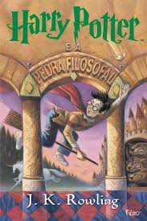
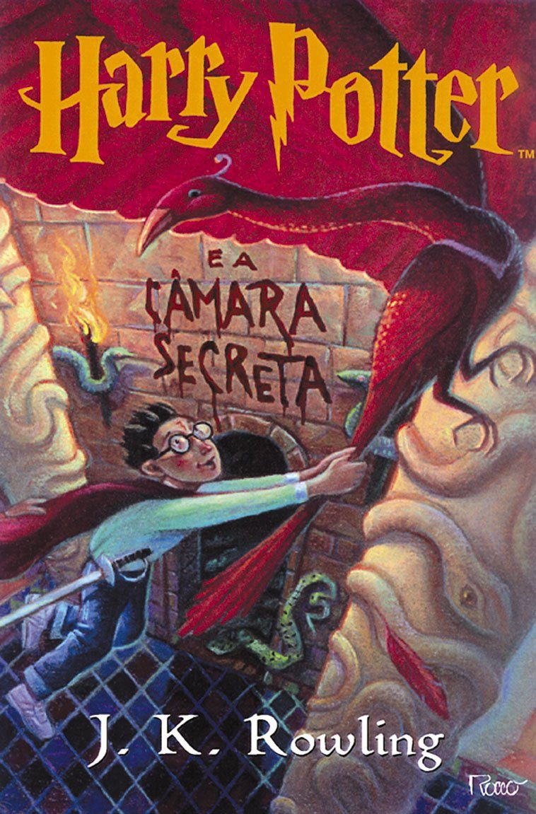
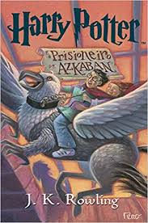
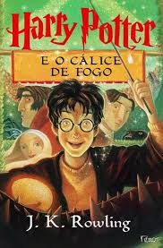
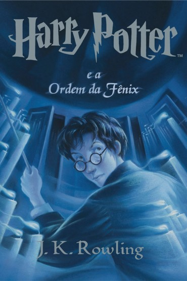
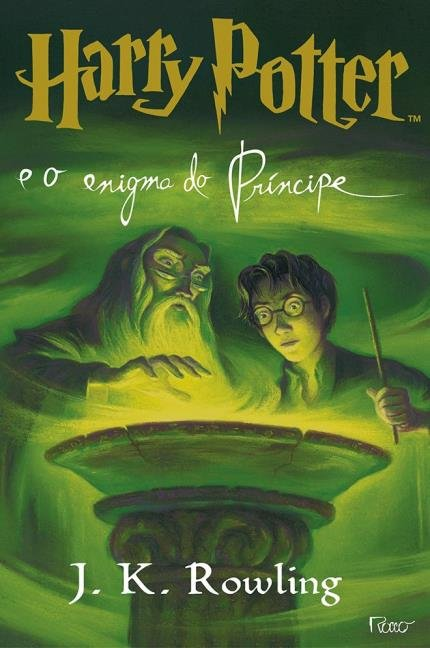

HARRY POTTER
Livros
Harry Potter e a Pedra Filosofal

O livro conta a história de Harry Potter, um garoto órfão criado por seus tios que descobre em seu décimo
primeiro aniversário que é um bruxo. No romance, são narrados os seus primeiros passos na comunidade bruxa,
sua ingressão na Escola de Magia e Bruxaria de Hogwarts e o início de sua amizade com Rony Weasley e Hermione
Granger, que o ajudam a enfrentar Lorde Voldemort, maior bruxo das trevas e assassino dos pais de Harry, que
agora procurava um objeto lendário, conhecido como a pedra filosofal.
Harry Potter e a Câmara Secreta

Após as sofríveis férias na casa dos tios, Harry Potter se prepara para voltar a Hogwarts e começar seu segundo ano
na escola de bruxos. Na véspera do início das aulas, a estranha criatura Dobby aparece em seu quarto e o avisa de
que voltar é um erro e que algo muito ruim pode acontecer se Harry insistir em continuar os estudos de bruxaria.
O garoto, no entanto, está disposto a correr o risco e se livrar do lar problemático.
Harry Potter e o Prisioneiro de Askaban

O terceiro ano de Harry Potter em Hogwarts começa mal quando ele descobre que o assassino Sirius Black escapou da
prisão de Azkaban e está empenhado em matá-lo. Enquanto o gato de Hermione atormenta o rato doente de Ron, um bando
de dementadores são enviados para proteger a escola de Sirius Black. Um professor misterioso ajuda Harry a aprender
a se defender.
Harry Potter e o Cálice de Fogo

Harry retorna para seu quarto ano na Escola de Magia e Bruxaria de Hogwarts, junto com os seus amigos Rony e Hermione.
Desta vez, acontece um torneio entre as três maiores escola de magia, com um participante selecionado de cada escola
pelo Cálice de Fogo. O nome de Harry aparece, mesmo não tendo se inscrito, e ele precisa competir.
Harry Potter e a Ordem da Fênix

Harry está em seu quinto ano em Hogwarts. Ele acaba ouvindo que muitos não sabem a verdade sobre seu encontro com
Lord Voldermort. O Ministro de Mágica, Cornelius Fudge, indica Dolores Umbridge para ser a nova professora de Defesa
contra as Artes Negras, por acreditar que Dumbledore planeja tomar seu lugar. Porém, os métodos que ela usa são totalmente
inapropriados. Harry, então, se reúne com um grupo de alunos para defender sua escola.
Harry Potter e o Enigma do Príncipe

Os Comensais da Morte estão empolgados com a volta de Voldemort e atacam o mundo dos trouxas e dos bruxos. Dumbledore chama
seu amigo Horácio Slughorn para ajudá-lo na preparação de Harry Potter. Harry se vê cada vez mais interessado em Gina, e
Hermione morre de ciúmes de Ron, mas prefere não dizer nada.
Harry Potter e as Relíquias da Morte

Sem a orientação e a proteção de seus professores, Harry, Rony e Hermione começam uma missão para destruir as Horcruxes, que
são fontes da imortalidade de Voldemort. Mais do que nunca, eles dependem uns dos outros, mas forças obscuras ameaçam
separá-los.
| Nome do livro |
Ano de lançamento |
| Pedra Filosofal |
1997 |
| Câmara Secreta |
1998 |
| Prisioneiro de Askaban |
1999 |
| Cálice de Fogo |
2000 |
| Ordem da Fênix |
2003 |
| Enigma do Príncipe |
2005 |
| Relíquias da Morte |
2007 |
Você encontra todos os livros à venda na Saraiva :)
Veja críticas sobre